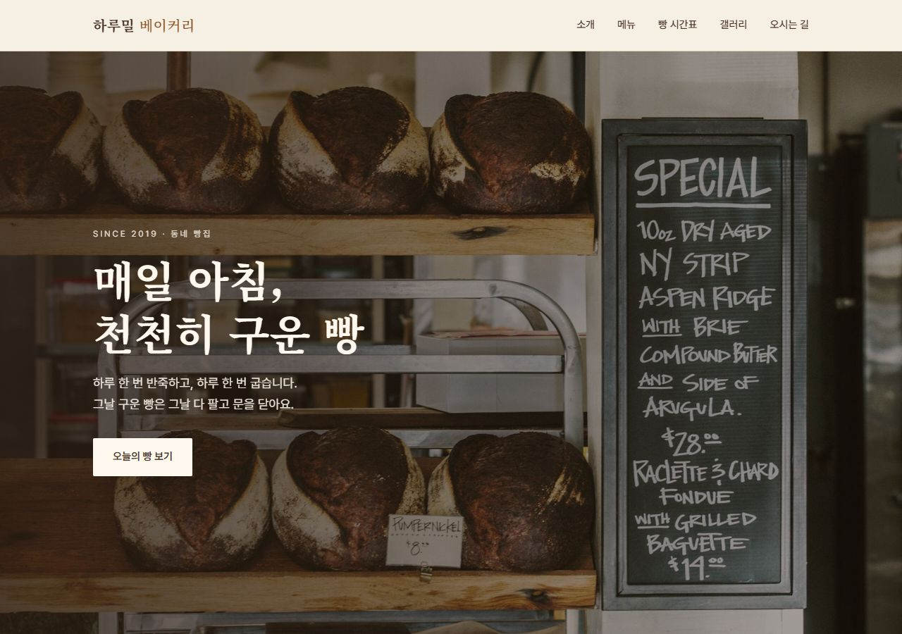
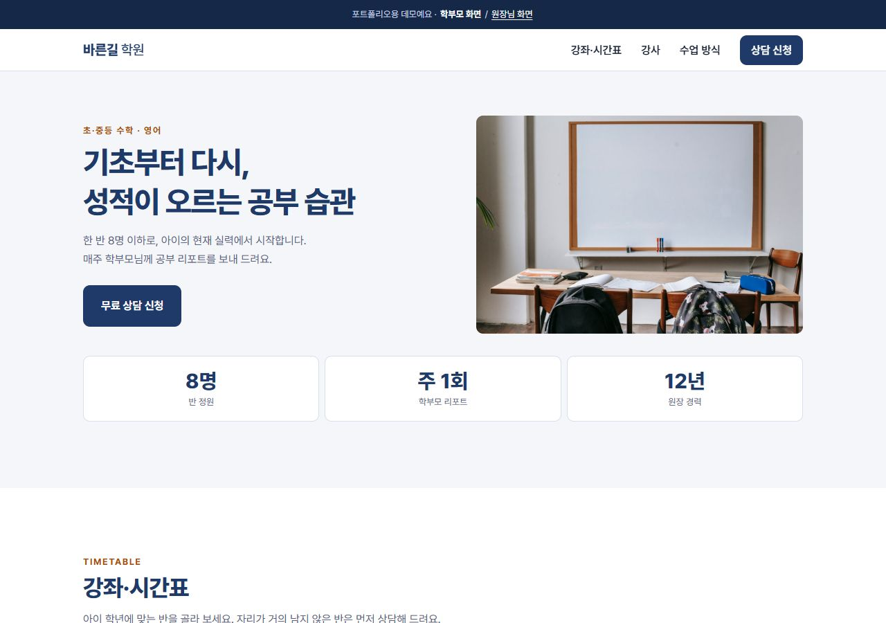
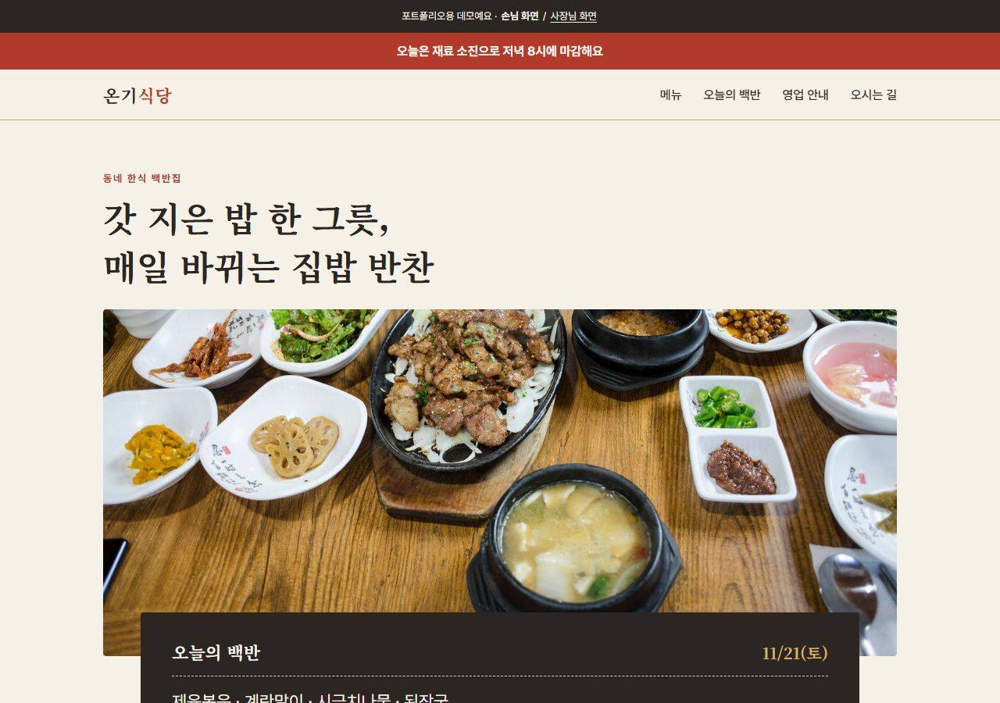
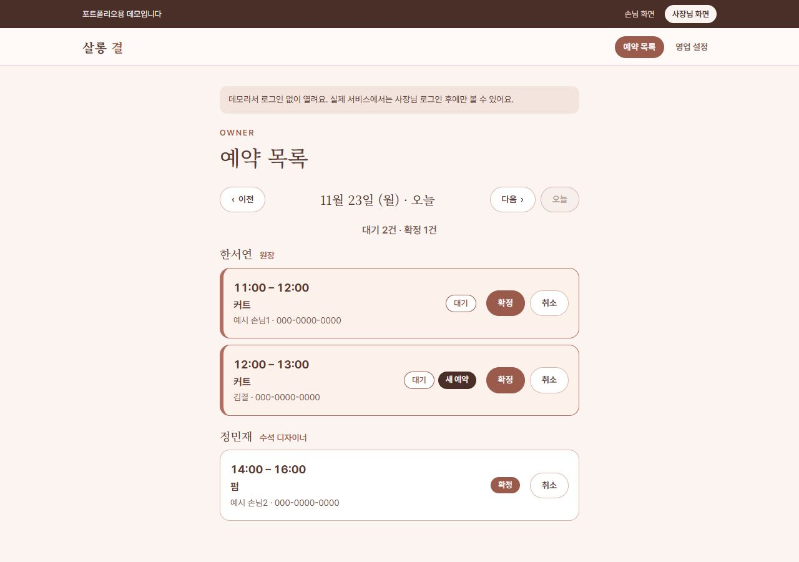
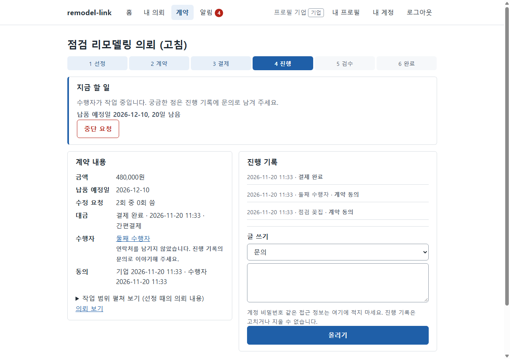
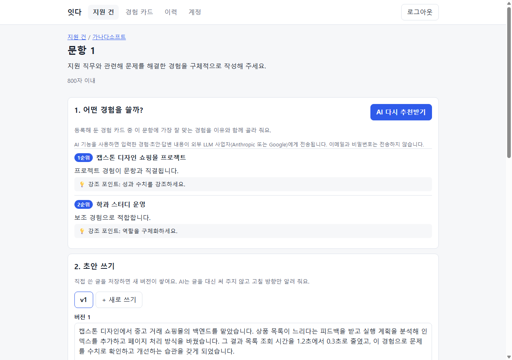
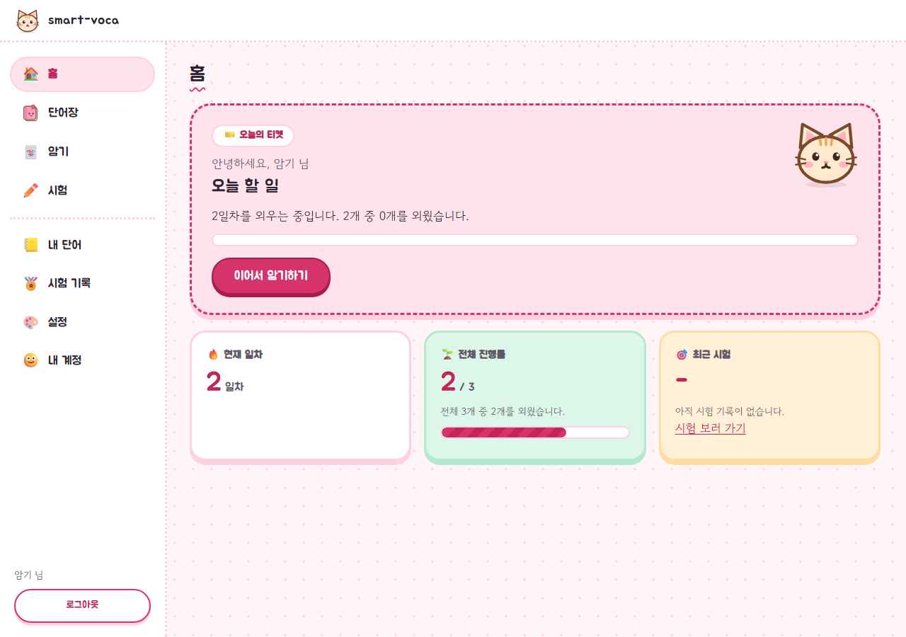

홈페이지 · 랜딩페이지
가게·회사 소개, 이벤트 페이지. 휴대폰에서도 보기 좋고 빠르게 열리는 반응형으로 만듭니다.
화면만 만드는 퍼블리싱이 아니라, 서버와 데이터베이스까지 함께 만듭니다.
가게·회사 소개, 이벤트 페이지. 휴대폰에서도 보기 좋고 빠르게 열리는 반응형으로 만듭니다.
예약 신청, 문의 게시판, 회원가입·로그인. 들어온 내용은 관리자 페이지에서 바로 확인합니다.
기존 사이트의 오류 수정, 기능 추가, 글·사진 교체. 작은 작업도 부담 없이 맡겨 주세요.
크몽·숨고 패키지와 같은 구성입니다. 범위가 다르면 상담 후 맞춤 견적을 드립니다.
30만 원 ~
한 장짜리 소개·이벤트 페이지
80만 원 ~
가게·회사 홈페이지
150만 원 ~
예약·회원 기능이 있는 사이트
* 도메인·호스팅 비용은 별도이며, 연결은 무료로 도와드립니다.
무엇을 만들었는지보다 어떤 문제를 어떻게 풀었는지를 보여 드립니다.
가상의 가게로 만든 데모입니다. 실제 가게가 아닙니다.

가상의 학원으로 만든 데모입니다. 신청 내용은 내 브라우저에만 저장됩니다.

가상의 가게로 만든 데모입니다. 바꾼 내용은 내 브라우저에만 저장됩니다.

가상의 미용실로 만든 데모입니다. 방문자마다 따로 쓰는 예시 가게가 만들어지고 24시간 뒤 지워집니다. 처음 열 때 서버가 깨어나느라 조금 걸릴 수 있습니다.

비공개 저장소입니다. 상담 때 화면으로 시연해 드립니다.

비공개 저장소입니다. 상담 때 화면으로 시연해 드립니다.


단계마다 진행 상황을 공유해서, 처음 맡기셔도 안심할 수 있습니다.
원하는 사이트와 참고 사례를 들어요
범위·기간·비용을 확정해요
화면 시안을 먼저 보여 드려요
중간 결과를 링크로 공유해요
배포와 사용법 안내까지 해요
납품 후 문제도 책임져요
패키지마다 2~5회입니다. 오타나 사진 교체처럼 간단한 수정은 횟수에 넣지 않습니다.
도메인과 호스팅은 의뢰인 명의로 만들어 직접 소유하시도록 합니다. 구매와 연결 과정은 화면을 보며 함께 진행합니다.
제가 만든 부분의 오류는 기간과 상관없이 무상으로 고쳐 드립니다. 새 기능 추가는 따로 견적을 드립니다.
네. 마음에 드는 사이트 몇 곳만 알려 주시면 그 분위기에 맞춰 시안을 먼저 만들어 보여 드립니다.
한 장짜리 페이지는 5일, 홈페이지는 10일, 예약·회원 기능이 있으면 3주 정도입니다. 자료가 준비된 날부터 셉니다.